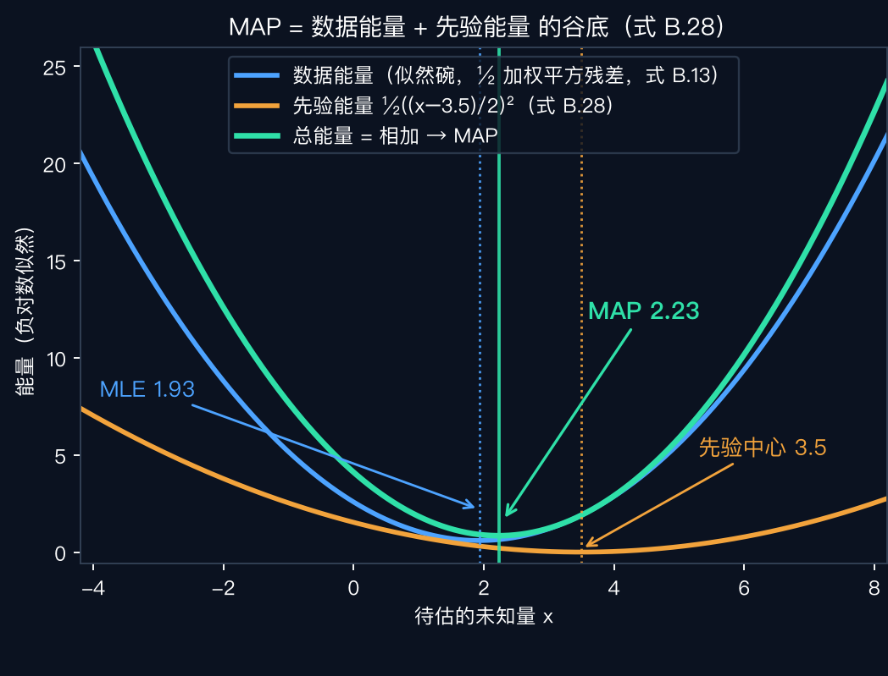
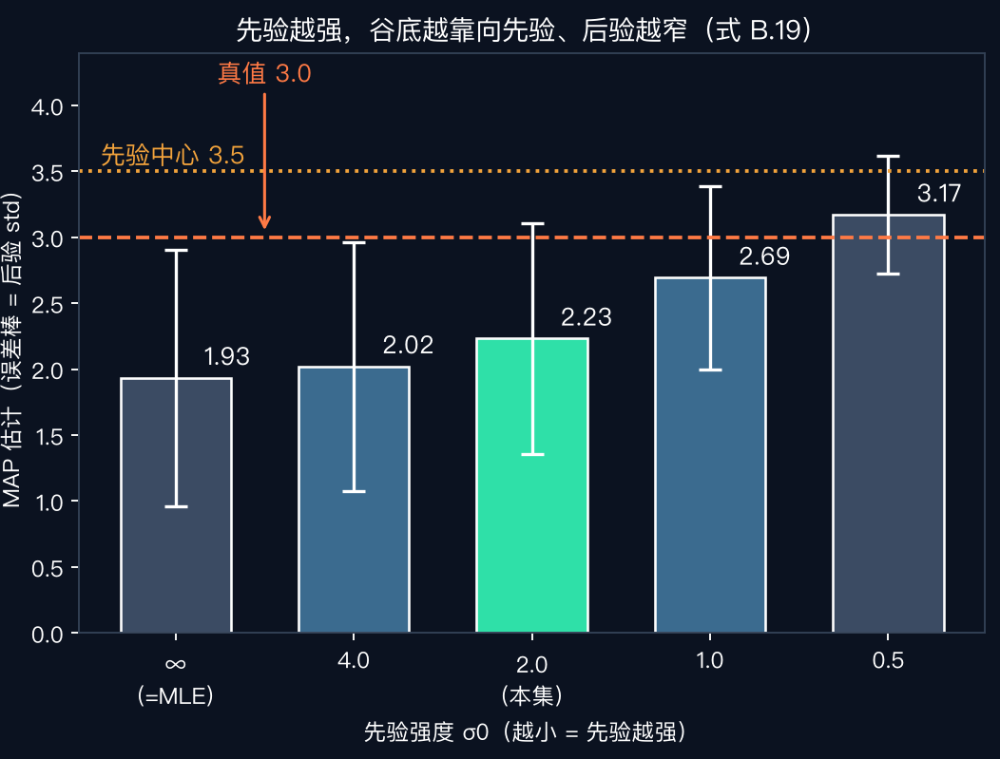

数学工具箱 · 06
贝叶斯思维：
先验、似然、后验与 MAP
数据投似然票，先验投常识票 —— 附录 B 后半，给估计装上常识
接棒 · MAXIMUM LIKELIHOOD
MLE：没有先验时
选似然最大的 x ＝ 选概率密度最高的 x。
原书第 944 页：候选值紧紧聚在一个值周围（如 p(x|y) 单峰高斯）时，MLE 最优——无偏、方差最小。
两种陷阱 · DECISION THEORY
多峰与损失：别急着选峰
多峰后验
对数似然有几个局部极小 → 推迟决策，等更多测量
CONDENSATION（§7.3.1）＝粒子滤波与 MCMC 技术的一员（第 944 页）
期望损失 B.15
\(E_{\text{loss}} = \int l(x-z)\,p(z\,|\,y)\,dz\)
\(l=\delta\) → 峰（无先验 = MLE）；\(l=\|x-z\|^2\) → MSE（后验均值）
原书例：机器人避墙——损失两侧不必对称（第 944 页；原书措辞 underestimates，按语义疑为笔误——讲者注）。显式建模损失 ＝ 统计决策理论（第 941 页）。
线性情形 · LEAST SQUARES
线性测量：解与不确定性一起拿到
Hᵢ = I → 上一集的信息加权平均（B.20）；非线性：迭代解（A.3），CRLB 用雅可比替 H。
动机 · WHY PRIOR
只有似然：寸步难行
原书第 948 页（B.4 开篇）：有时与测量一致的可能解范围太大，大到没有用处。
图像去噪（§3.4.2）：只用带噪版本逐像素估计，根本无法前进。
脚注 4 直译：事实上，最大似然估计就是噪声图像本身。
出路：靠图像的典型性质——分段平滑（§4.2.1）。
主角 · PRIOR p(x)
先验：好答案长什么样
先验分布
p(x)：衡量一张图是自然图像的可能性
典型性质如分段平滑（第 948 页原话 e.g.）
生成模型
构建/估计 p(x) 的统计模型
从 p(x) 采样，看像不像自然图像
不止图像
物体大致尺寸｜镜头焦距｜物体出现的概率
全是先验，都让估计更可靠（第 948 页）
分段平滑性常用马尔可夫随机场编码（式 B.29）——留到 §4.3 细讲。
钥匙 · BAYES' RULE
贝叶斯法则：后验 ∝ 似然 × 先验
例外：先验自带未知参数时可保留 log p(y)——奥卡姆剃刀 / 模型选择（第 948–949 页）。
MAP · ENERGY FORM
MAP：数据能量 + 先验能量
讲者解读：可以把正则项看成一个先验。
原书警告：MAP 选的是后验的「峰」，而非 MSE 这类更稳定的统计量。
实验数学 · GAUSSIAN × GAUSSIAN
高斯 × 高斯：还是高斯
后验精度 ＝ 各测量精度之和 ＋ C₀——式 B.19 的信息账本再记一笔。
σ₀ 越小 → C₀ 越大 → 先验这票越重。
实验 · 能量分解
MLE 1.93 → MAP 2.23：先验推了一把
读数同上一集（A=2.20 σ=1，B=−2.30 σ=4），加先验 N(3.5, σ₀=2)：总能量 = 数据碗 + 先验浅碗，谷底朝 3.5 挪了 0.30（式 B.28）。

实验 · 先验强度扫描
σ₀ 越小，谷底越靠先验
σ₀：∞→1.93（=MLE）、4.0→2.02、2.0→2.23、1.0→2.69、0.5→3.17——已越过真值 3.0；std 0.97→0.44，更自信 ≠ 更准确；网格积分验证与解析一致。

伏笔回收 · ROBUST STATISTICS
离群值：B.3 稳健统计指路
M-估计量
长尾噪声（如 Laplacian）：惩罚随残差增长变慢
式 B.21 稳健惩罚 ρ 代平方；Barron 族（B.22）运行时自动调参（本课后面 §4.1.3 细讲）
IRLS
影响函数 ψ = ρ′（B.23）→ 权重 w = ψ/r（原书写作 Ψ）
式 B.24 迭代重加权最小平方——大残差被降权
尺度 + 开局
MAD × 1.4 ≈ 内点噪声 std（B.25）
RANSAC（Fischler–Bolles 1981）：随机小子集先找内点
原书第 945–947 页｜这些工具在 §8.1.4 与后续应用集里反复出现。
「
数据投似然票，先验投常识票；
MAP，是两叠票相加后最高的那座峰。
—— 本集记忆锚 ｜ 一条暗线：−log 似然是能量，先验也是能量——相加即正则化（式 B.28）
NEXT · 回书指路
读原书附录 B 后半第 943–949 页：式 B.14–B.19 MLE 与线性最小二乘 → B.3 稳健统计第 945–947 页（B.21–B.25 + RANSAC）→ B.4 先验与贝叶斯第 948–949 页（式 B.26–B.28）；B.5 随机场 / B.6 不确定性 → §4.3 与应用集回收
作业把 code/bayes_map_demo.py 里先验中心 X0 从 3.5 改成 0（错误的先验），σ0 从 4.0 调到 0.5——看 MAP 被越拉越偏：强先验能救你，也能坑你（参考：σ0=4/2/1/0.5 → MAP≈1.83/1.57/1.00/0.41，越强越偏向 0；ML 基线 1.93）
下一集E007 卷积——上一集两枚骰子点数之和的伏笔，马上兑现